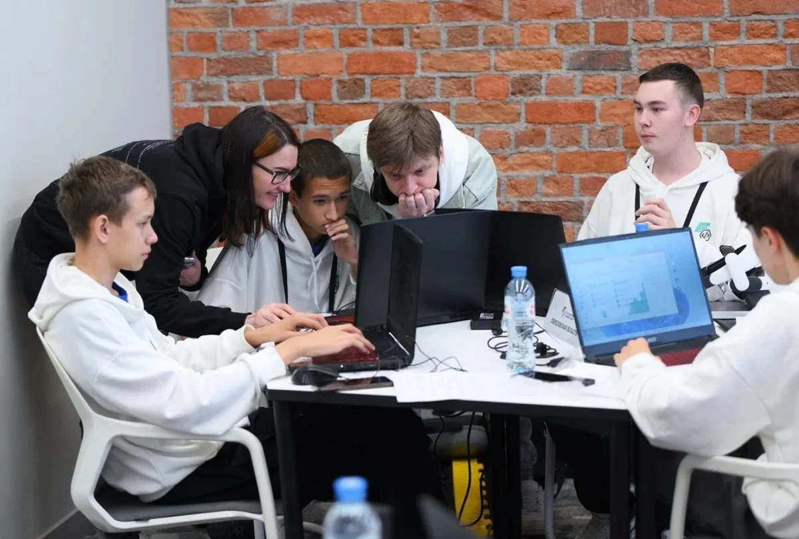
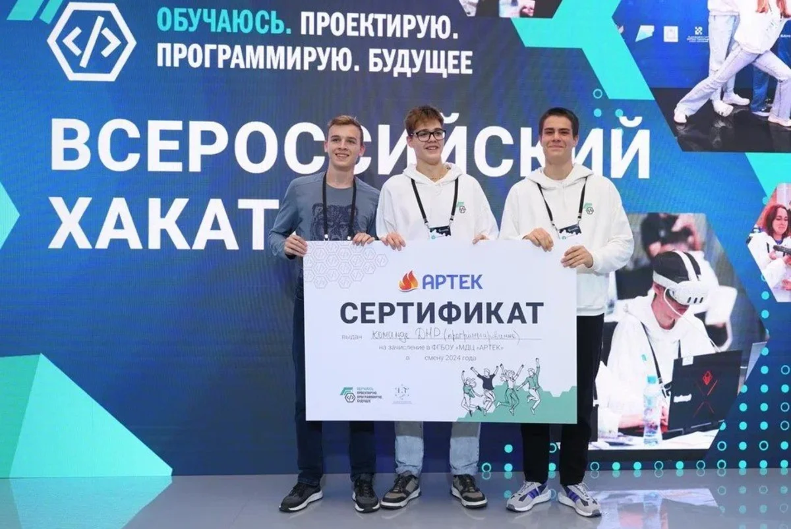
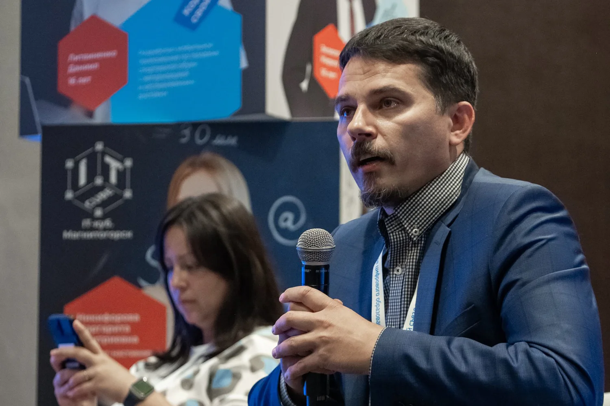
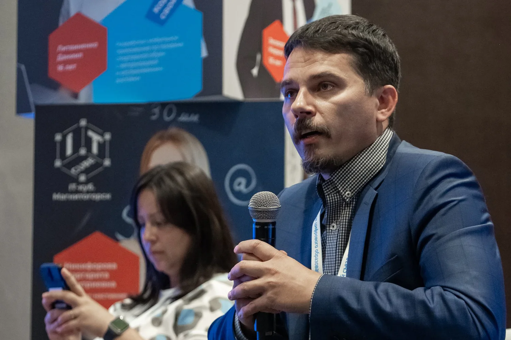
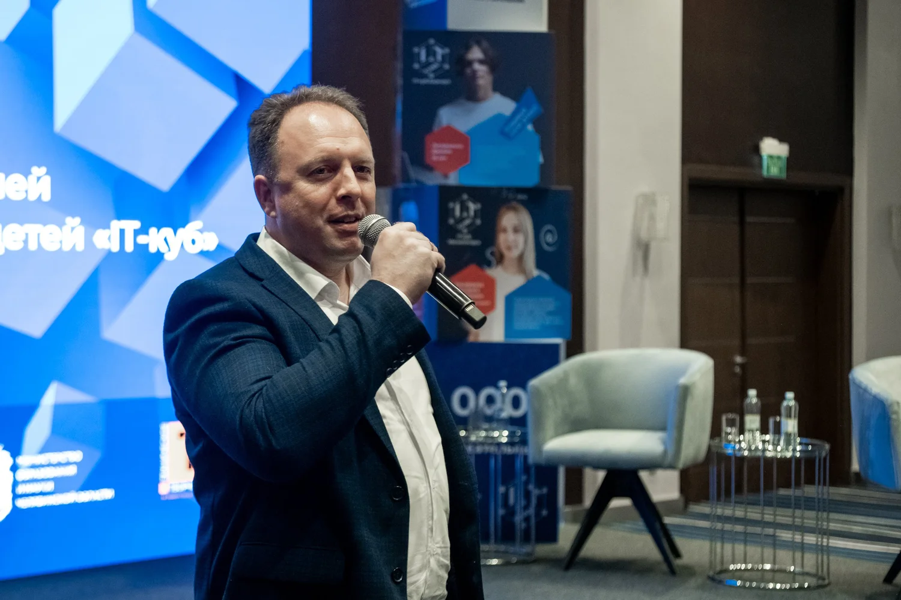
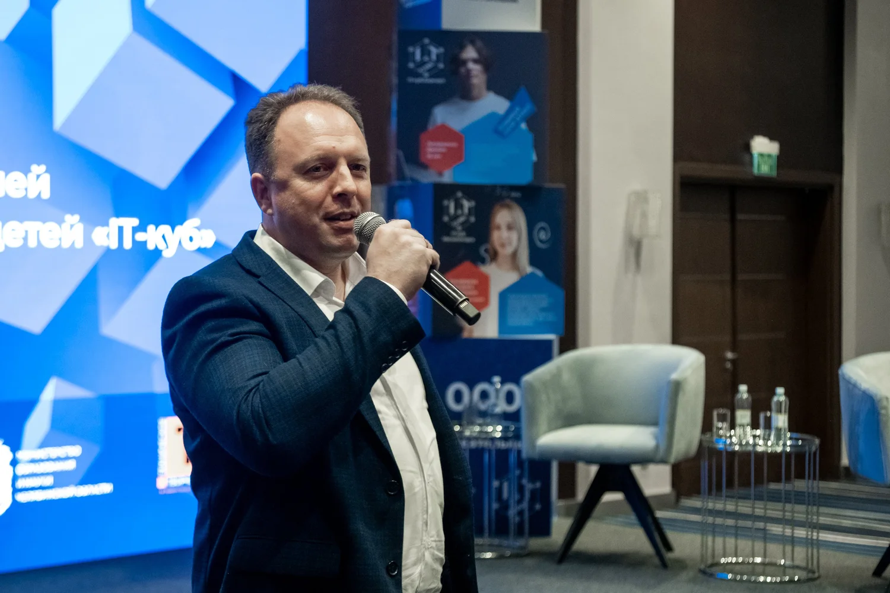

Завершился II Всероссийский хакатон «Обучаюсь. Проектирую. Программирую. Будущее». В течение трёх дней, с 9 по 11 октября, за звание лучших соревновались 30 команд юных программистов из центров цифрового образования детей «IT-куб» 23 российских регионов. Организатором мероприятия стал федеральный оператор сети центров «IT-куб» Федеральный институт цифровой трансформации в сфере образования (ФГАНУ «ФИЦТО») при поддержке Минпросвещения России.
Восходящие звёзды цифровых технологий в возрасте 14–18 лет демонстрировали своё мастерство в решении реальных IT-задач, подготовленных технологическими партнёрами мероприятия — признанными игроками на российском рынке цифровых технологий.
Погружаясь в решение кейсов, ребята, не просто раскрывали свои возможности, а получали новые знания и совершенствовали навыки командной работы. Представители компаний-партнёров отметили высокий уровень подготовки участников и их способность применять знания для решения реальных задач.

Кульминацией борьбы стала защита командных проектов, по итогам которой были объявлены победители во всех направлениях хакатона.
Направление «Программирование» (технологические партнёры — ТБанк и Центральный университет)
1 место: команда Смоленской области
2 место: команда Удмуртской Республики
3 место: команда Новосибирской области
Специальная номинация «Прорыв года»: команда Донецкой Народной Республики
Задание: разработка приложения для подсчёта удовлетворённости клиентов по различным товарам или услугам.
Направление «VR-разработка» (технологический партнёр — Varwin)
1 место: команда Приморского края
2 место: команда Свердловской области
3 место: команда Оренбургской области
Задание: создание виртуального тура по производственной площадке Уральского завода гражданской авиации с использованием интерактивных и игровых элементов.
Направление «Кибергигиена» (технологический партнёр — КИБЕРПРОТЕКТ)
1 место: команда Забайкальского края
2 место: команда Новосибирской области
3 место: команда Ставропольского края
Задание: создание чат-бота по цифровой гигиене «Кибербезопасный Новый год», предназначенного для повышения уровня осведомлённости пользователей и помощи в усилении безопасности существующих аккаунтов и чувствительных данных.
Победители II Всероссийского хакатона «Обучаюсь. Проектирую. Программирую. Будущее» были награждены дипломами и ценными призами, а также получили приглашение на стажировку в компанию, курировавшую каждое из направлений. Призёры хакатона, занявшие 2 и 3 места, получили дипломы, призы от организаторов и награды от технологических партнёров.
Приятным сюрпризом для победителей хакатона стала дополнительная награда – путёвка в международный детский центр «Артек». Отметим, что руководитель Центра дополнительного образования и детского творчества МДЦ «Артек» Диана Кадырова была одним из экспертов состязания и активно участвовала в оценке проектов команд-участников.
На церемонии закрытия мероприятия заместитель министра образования и науки Нижегородской области Любовь Широкова поблагодарила юных участников, наставников команд, организаторов и партнёров мероприятия, подчеркнув важность совместной работы для формирования востребованных компетенций и будущего нашей страны.
Слова благодарности юным участникам хакатона произнесла первый заместитель директора ФГАНУ «ФИЦТО» Юлия Пономарёва. Она призвала ребят запомнить опыт, полученный ими во время мероприятия, и хранить в душе радость победы.
Особо отметили организаторы мероприятия команду Донецкой Народной Республики по направлению «Программирование». Ребята были награждены путёвками в «Артек» в рамках номинации «Прорыв года». Заместитель директора ФГАНУ «ФИЦТО» Андрей Гамула подчеркнул, что донецкие школьники смогла достойно выступить на хакатоне, хотя в республике пока нет своего центра «IT-куб».

Участие в мероприятии учащихся из ДНР стало возможно благодаря проекту «Цифровое наставничество». Он запущен ФГАНУ «ФИЦТО» для ускоренной интеграции образовательных организаций ДНР, ЛНР, Запорожской и Херсонской областей в цифровое образовательное пространство России. Ребята прошли подготовку с помощью центра «IT-куб» Княгинино (Нижегородская область) и подтвердили успешность такого сотрудничества.
Три дня работы хакатона пролетели незаметно. Организаторы мероприятия обеспечили ребятам отличную возможность снять напряжение и зарядиться энергией. В перерывах хакатона проходила зажигательная игра-разминка «Спорт в кубе». Юные программисты быстро прониклись спортивным азартом и с удовольствием выполняли упражнения. Победители соревнований получили заслуженные награды.
Не были забыты и педагоги-наставники: для них проходили семинары и мастер-классы. А для закреплений навыков по кибербезопасности у детей и взрослых компания «КИБЕРПРОТЕКТ» провела познавательный квиз. И, конечно, участников хакатона познакомили с достопримечательностями Нижнего Новгорода. Во время экскурсии учащиеся и педагоги прошли познавательную викторину по истории города с помощью мобильного приложения «Игра первых» от разработчиков ФГАНУ «ФИЦТО».
II Всероссийский хакатон «Обучаюсь. Проектирую. Программирую. Будущее» подтвердил, что российская молодёжь готова к технологическим вызовам будущего, и продемонстрировал высокий уровень подготовки обучающихся центров «IT-куб».

 
 
